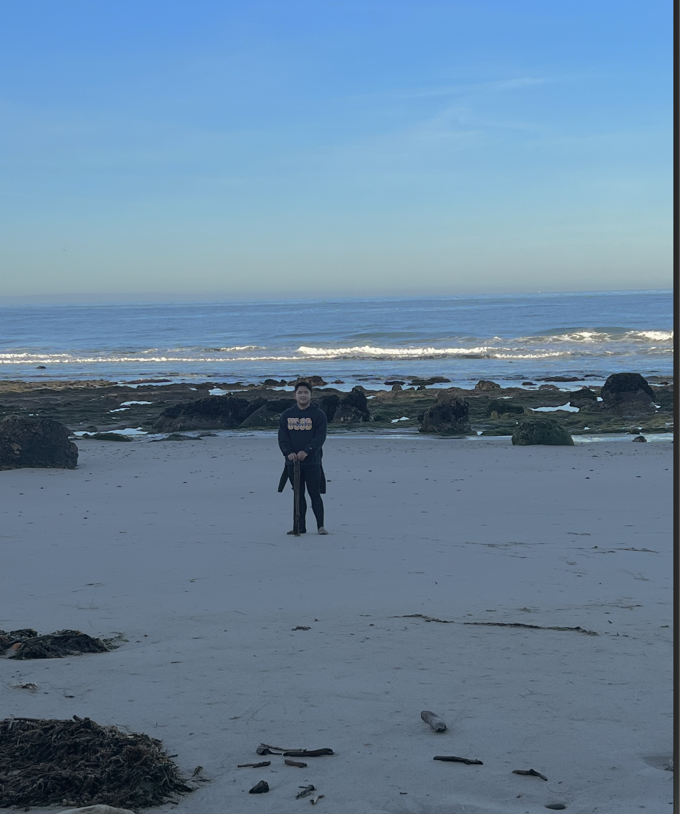
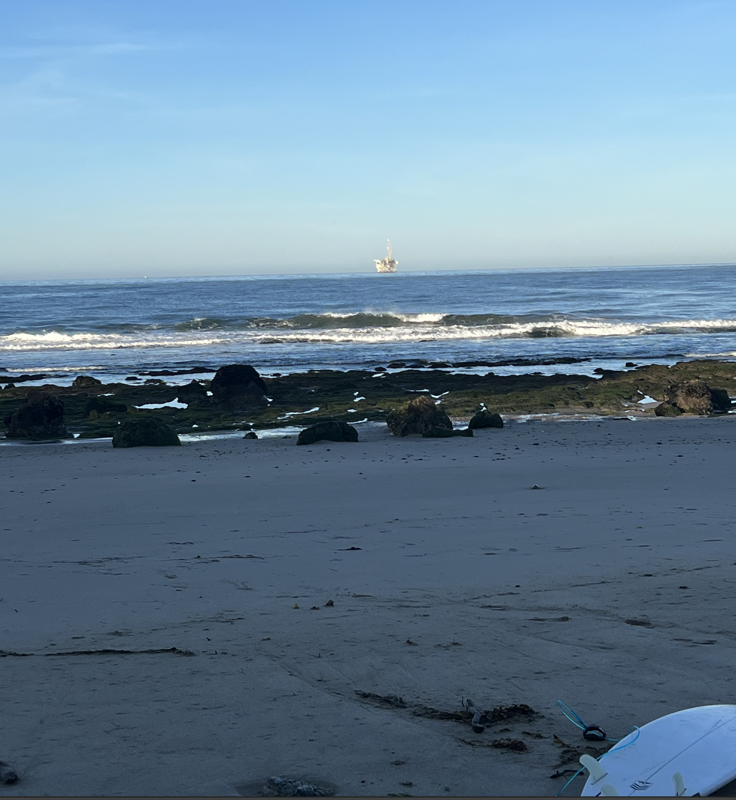
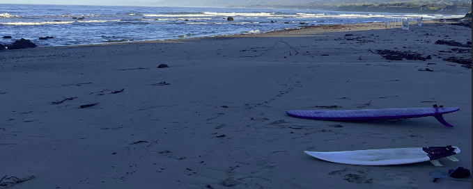
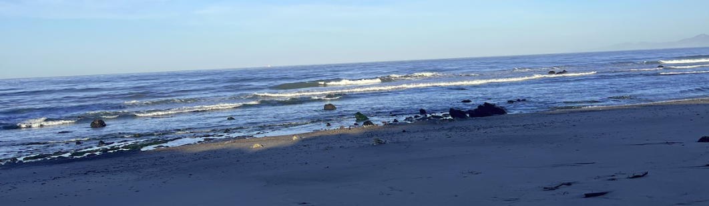
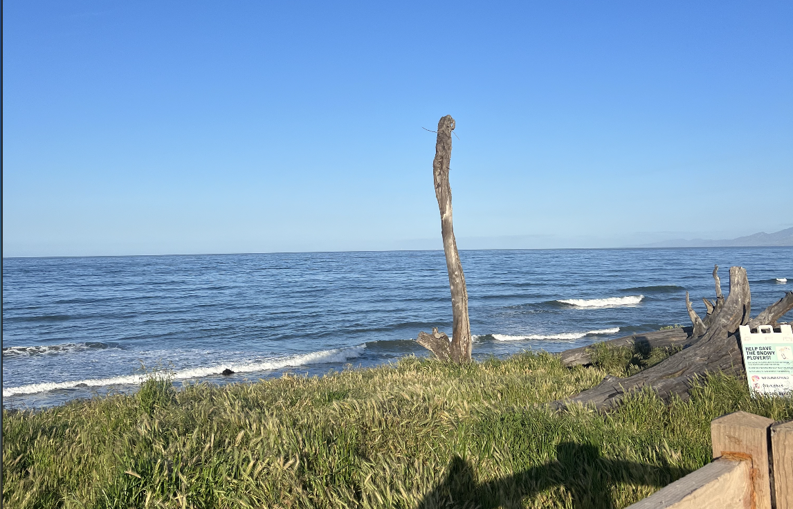
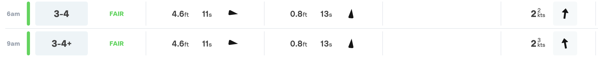
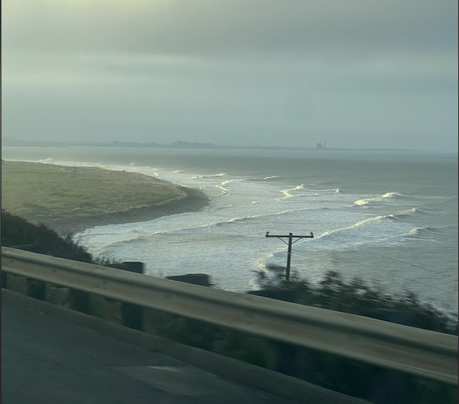
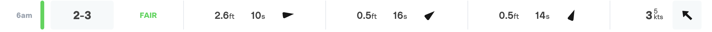

Saturday April 22nd, 2023
Sands @ 7:20am
Another grovel session at sands with a predicted dominant swell of 1.8ft swell from the west at 7s with total glass

I thought it was going to be pretty fun and slabby like Thursday but sometimes you show up and get skunked.

Funky winds came and chopped it all up about an hour, making some funky squiggly waves. Also 30 min in, Ryan crinked his neck on the shallow water.
So in all, stayed in for about an hour without much to show so Ryan and I decided to save our energy for tomorrow and the next few days of promising swell.
Prediction:5/10
Rating:3/10
Thursday April 20th, 2023
Sands @ 7:00am
Today was an actually surprisngly fun day. It was predicted to have a dominant swell of 1.6ft W with 5knts cross-off shore from the North at a super low tide but rising.
Usually I hate sands at low tide as it gets pretty sketchy with the rocks and the dumping waves sands offers when its on, but on a smaller swell like today it provides the perfect fun.

This picture does not do today's session justice, but it is pretty reflective of what things looked like for the first half hour as the tide filled in.
After the tide filled in, there were solid slabby rights,lefts, and small close out tubes about 3-4ft high that were just so fun to send on the drops only to get pitched over the falls on the steeper ones.
Near the last 30 minutes, it got pretty mushy as the tide rose too much and the swell was dropping but overall super fun session; will be trying lowtide sands again very soon
Prediction:4/10
Rating:5/10
Tuesday April 18th, 2023
Sands @ 7:00am
Typical grovel session at sands not expexting much with heavy forecasted winds
I forgot to record the predictions but I think surfline predicted 1.7ft from the West @ 7s with cross off winds at 5-7kts
Honestly I thought it was going to be pretty bad and blown out, but I was desperate for something so I headed out.

At first look, I seemed I was right on the dot, but after 30 minutes or so, the tide started dropping and a couple of "proper sands" sets rolled through.
I'm not entirely sure what's been going on with the sandbars, but the rights at Sands the last few weeks have been amazing as they don't instantly close out, for now at least.
So with the occasional set wave, I got some pretty fun rides.
Prediction:3/10
Rating:5.5/10
Thursday April 13th, 2023
C. Steet @ 7:30am
Day 2 of the run of swell for the week, my friends and I decided to hit C. street

With the another solid west swell at 4.6ft @10s (279 deg.) and slight onshore winds of 2knots, C. Street seems like it should be super fun.
Surf forecast predicted similar conditions as did MSW; truly a rare occurance for the three sites to have the same prediction at least for central coast.
Prediction:7-8/10
Upon pulling off the 101S for C-steet, I was greeted by some nice looking lines which was a good sign for the surf

Once I was suited up and paddling out, the forecast looked like it was a true 3-4' ft but it had way more texture from the wind than 2kts.
Despite the always annoying ripcurrent pulling you towards the pier, there were still a few fun waves to be had until the wind really picked up around 9 and blew everything but the tip of the point out.
Even on a bad day at C-street, I'll still get 2-3x longer rides than at my local so even though it was fun, not the great conditions I was hoping for.
Rating:4/10
Wed. April 12th, 2023
Sands @ 6:40AM
After a bit of a flat spell, surf forecast, surfline, and the buoys showed promising waves for Goleta with a solid West swell of 2.6ft @ 10s with onshore winds at 3 knots

With a decent west with longer period, I thought devs would be fun enough to ride on a midlength but once I woke up and checked the buoy to see
a wind wave height of 7.2ft, I knew it was gonna be mushy and boy was I right.
Devs was maybe 2 ft tops at the bigger sets and super mushy. Thankfully though Sands was bigger with sets in the 3-4ft range offering some of the best rights I've seen at sands all year since they actually stayed open.
Because of the mush from the wind, it was still a bit hard to scrape into the waves especially on my epoxy shortboard, but overall it was pretyt fun.
Rating:6/10
January 5th, 2023 Santa Barbara Swell
This day was crazy. Santa Cruz and SF was flooding, SD had 30 ft bombs, and SB even had some tow-in waves.
Here's some clips from that day with spots ranging from Rincon to more up North
Rincon
Devs